Two-way valves let the air pockets flow backward, so I swapped them for one-way valves. Then I hunted leaks, tuned submersion depth, and widened the pipes so siphoning stopped faking the height readings. Power up, shut down, pull it out of the water, again. It works best horizontally.
Workshop · Builds
Builds
Work outside the lab. Two physics problems I took to a tournament, two robots, and the rest of the bench. Some are mine alone, some were team builds I led.
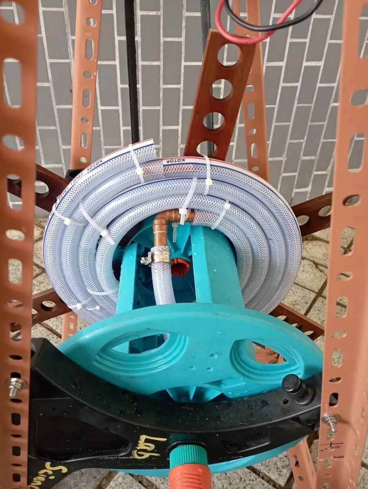
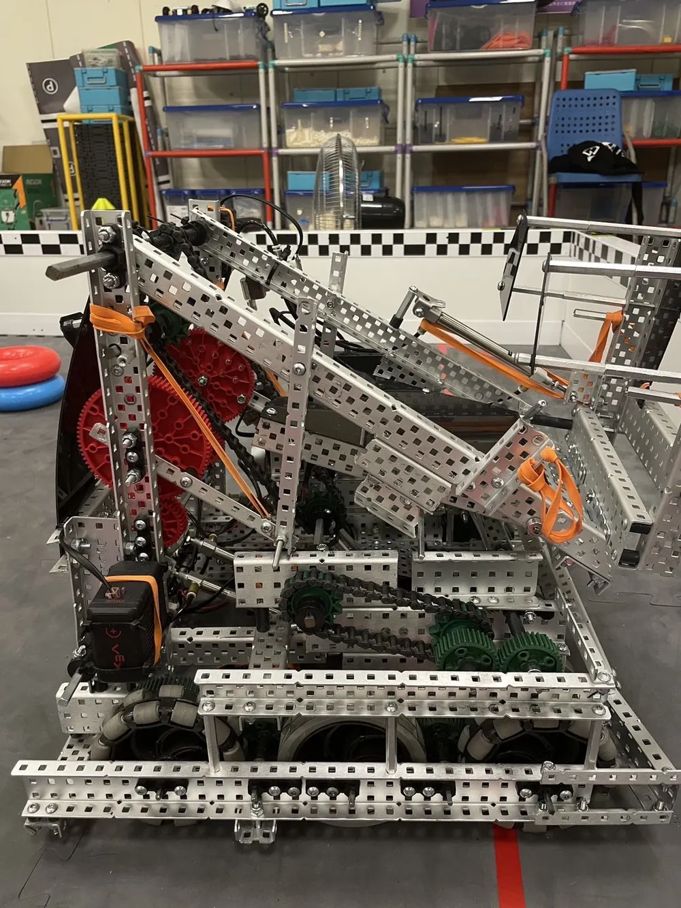
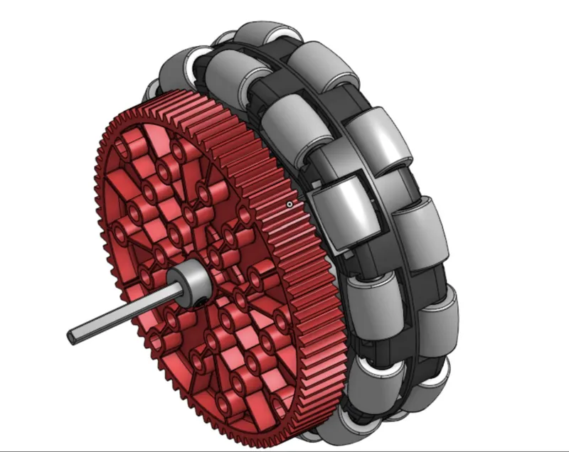
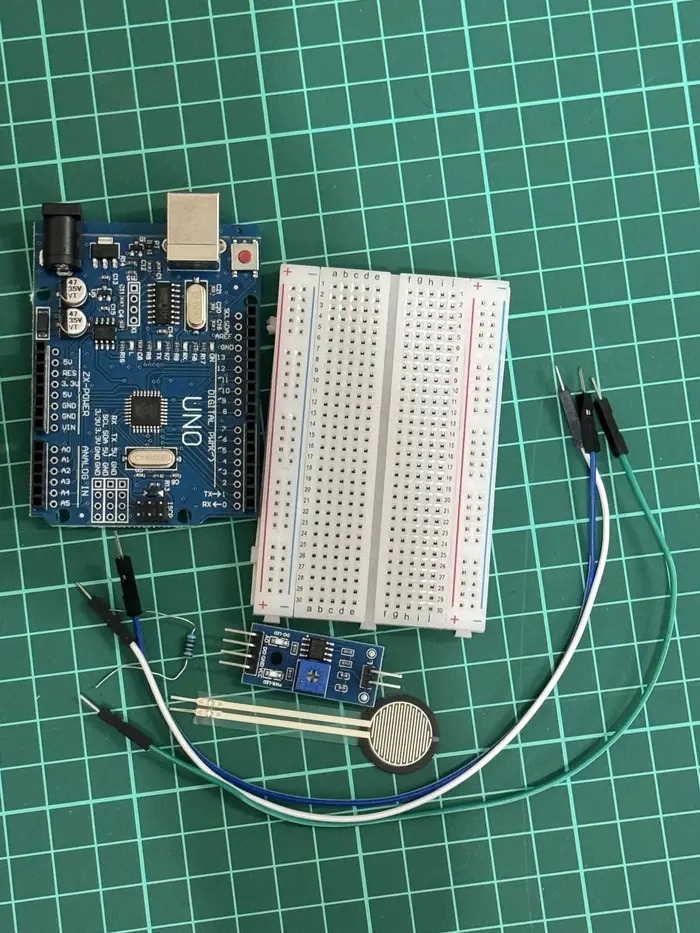
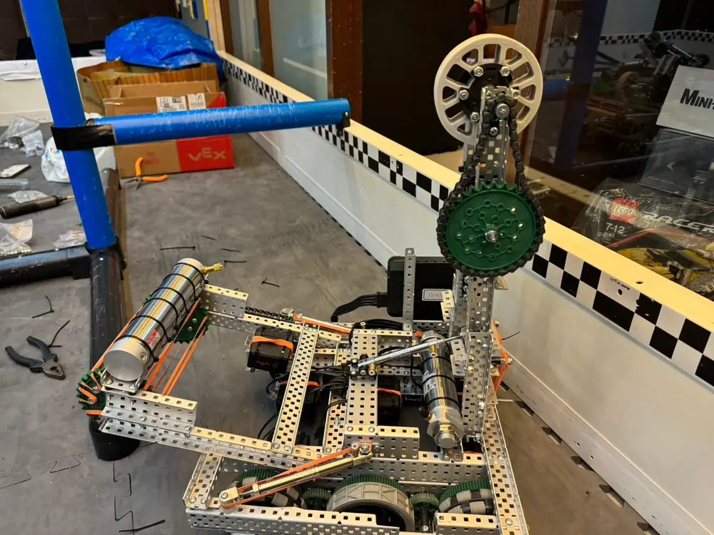
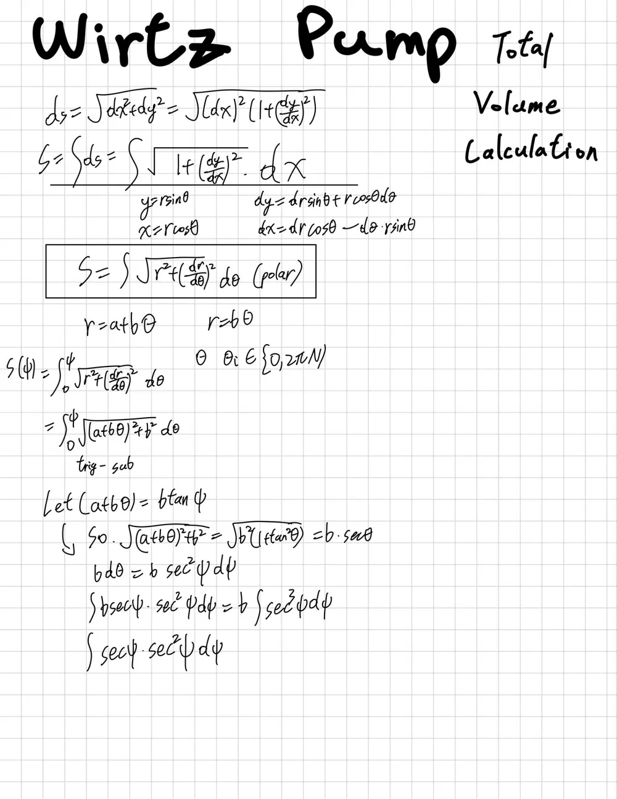
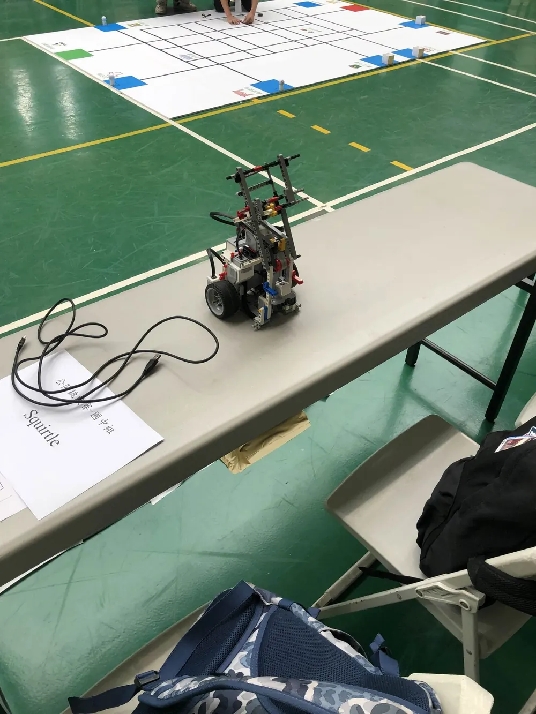
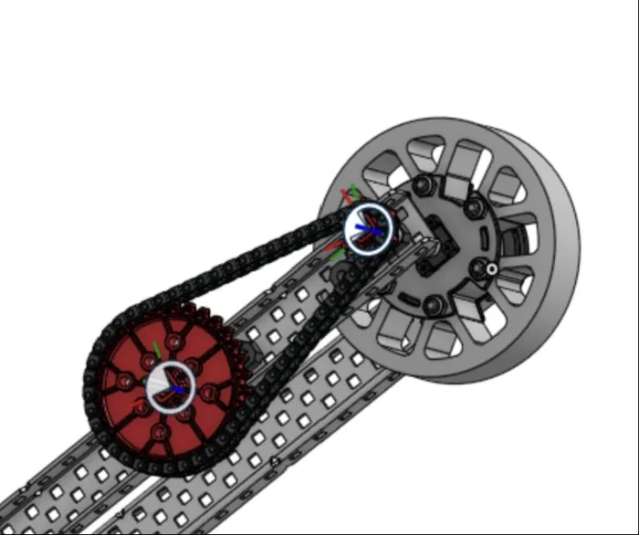
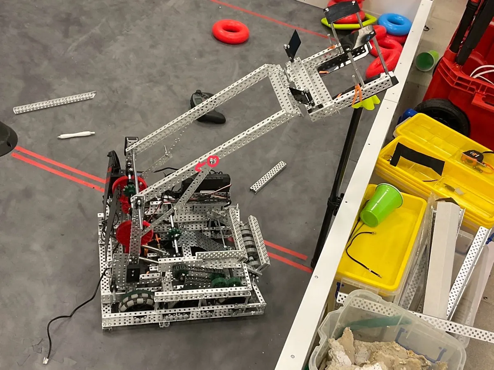
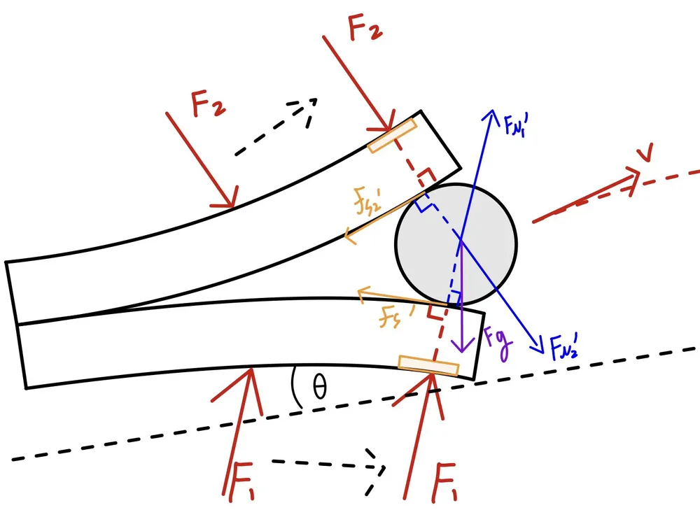
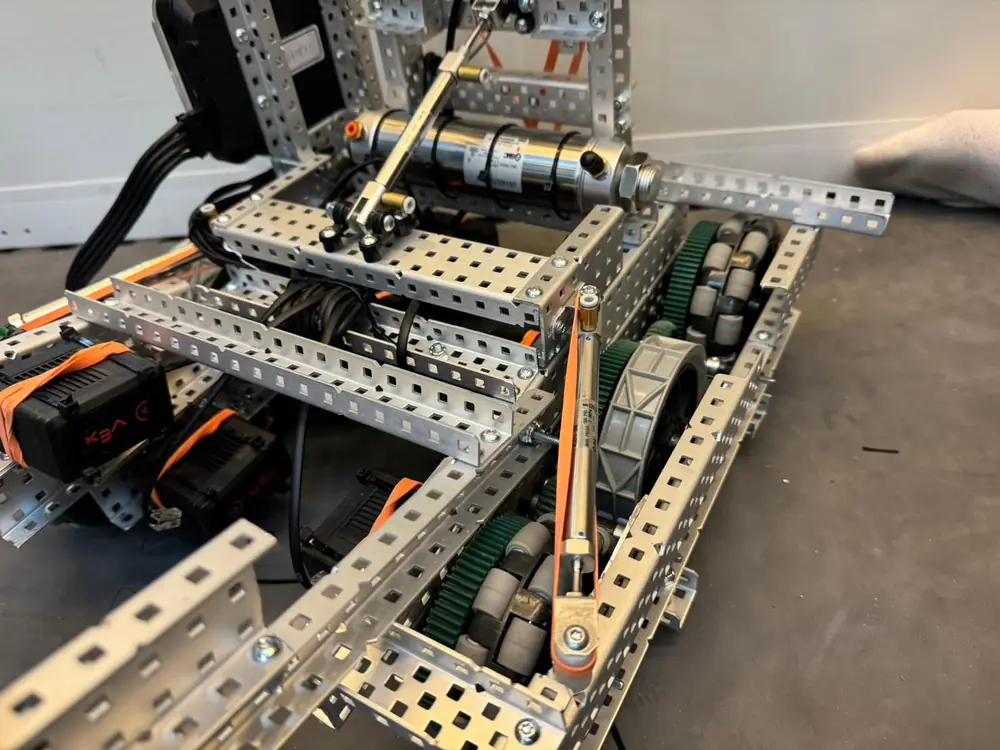
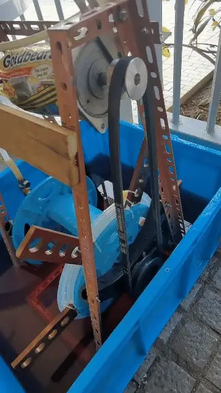
HKYPT 2024–25Team lead · Silver Medal · 6th in Hong Kong
Hong Kong Young Physicists’ Tournament
I recruited the team and led it from Sep 2024 to the final on Feb 22, 2025. We finished as a trio. Each round is a 12-minute report, then the other team opposes it in front of a jury of physicists. We made the final, placed 6th in Hong Kong and took a Silver Medal.
Problem 16Wirtz pump
How high can a coiled tube pump water?
A Wirtz pump is a coiled tube that dips one end into water once per turn. The question is how high it can push water, and why. Each turn scoops a plug of water and a pocket of air. Each half-loop then acts like a pair of connected vessels, so the pressure differences stack up coil by coil, following Δp = ρgΔh.
I derived the Archimedes spiral in polar coordinates, built the upper-bound model from the level difference in each loop plus the air pockets in the outlet, and measured the air lift (about 6.2 cm per pocket) because the published air-lift formula needed quantities we couldn’t measure.
Version 1 was a miniature on a CD with a syringe. Version 2 was a garden hose reel on a 12 V motor, with PVC-reinforced fiber tubing to keep the coils round and L-shaped copper tubing from copper bars I sawed by hand. I swept angular velocity, submersion, coil count, tube diameter and geometry.
170.7 cmhighest lift, at 50% submersion
379 cmmodel’s upper bound for the 5-loop pump
0.9967R² for lift against submersion
The bound adds up the water-column differences in the five loops (237.16 cm) and the air pockets riding up the outlet. At the reference setup (5 loops, 30% submersion, 3.163 rad/s) we measured 142.6 cm, and every run stayed under the bound. The gap has two causes. The water in each loop only reaches part of its maximum level difference, and some water runs back down past the air pockets and lets air escape.
More loops pushed water higher: 82 cm with 3, 102.3 with 4, 142.6 with 5. Lift rose in a straight line with submersion, up to 170.7 cm at 50%, though at 100% there’s no air at all and lift drops to zero, so there has to be an optimum. A narrower tube made almost no difference (148.2 cm against 142.6). Speed didn’t matter until about 4 rad/s. Past that the pump couldn’t fill each loop, and the waves in the tub scattered the readings.
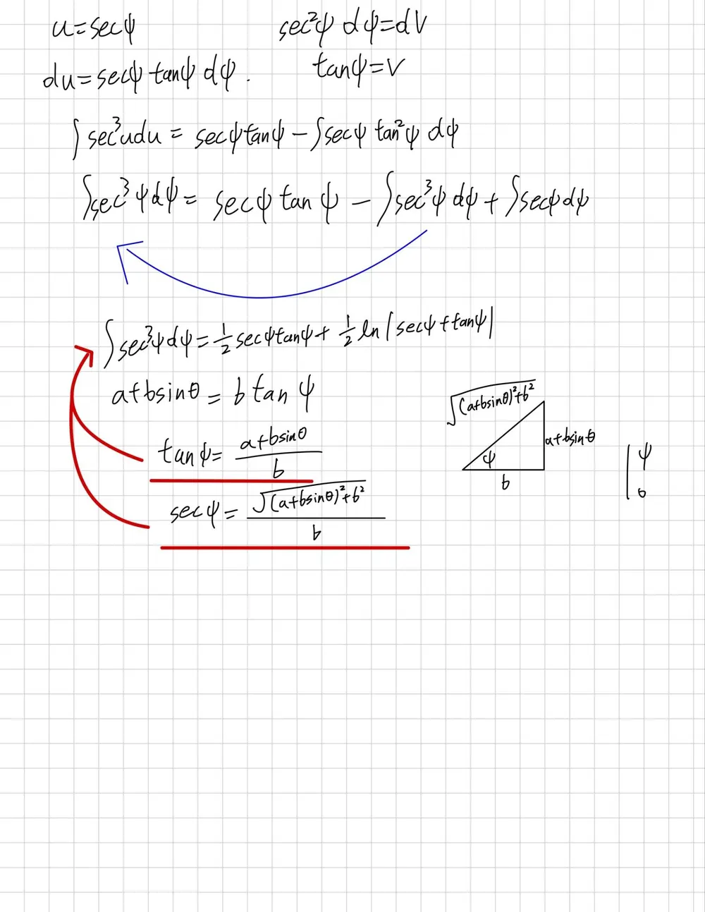
The opposing team said my model neglected surface tension and adhesion. My heart was racing. I stepped back and agreed. They were right.
Problem 7Ruler cannon · co-led design, analysis and slides
How fast does the ball leave the rulers?
Press two rulers together with a ball between their ends and the ball shoots out. The rulers bend and store strain energy. Once the force beats static friction, they snap back and throw the ball.
We modelled each ruler as a cantilever beam. The tip deflection is δ = FL³/3EI, the stored energy is ½Fδ, and setting that equal to ½mv² gives v = √(Fδ/m).
An FSR402 force sensor on an Arduino measured the applied force. We filmed each shot, measured the speed in Tracker, and averaged 8 runs per point. We swept applied force (2–8 N), distance from the pivot (0.15–0.25 m), ruler material (plastic at about 1.93 GPa against stainless steel at 200 GPa), ball mass (2–6 g) and friction texture.
v = √(Fδ / m), δ = FL³ / 3EI
Force against speed came out linear (R² = 0.9769), which is what the model predicts. Distance and mass also fit straight lines (R² = 0.9992 and 0.9694). The model predicts v ∝ L³ᐟ² and v ∝ m⁻¹ᐟ², so a straight-line fit isn’t the right test for those two. Friction texture barely mattered.
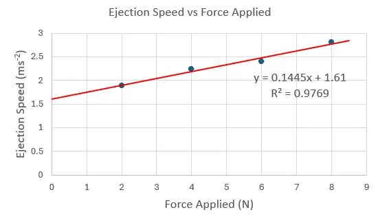
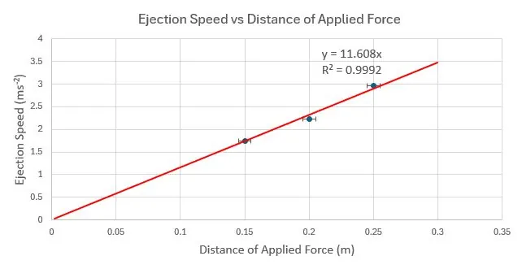
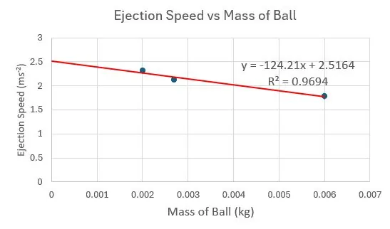
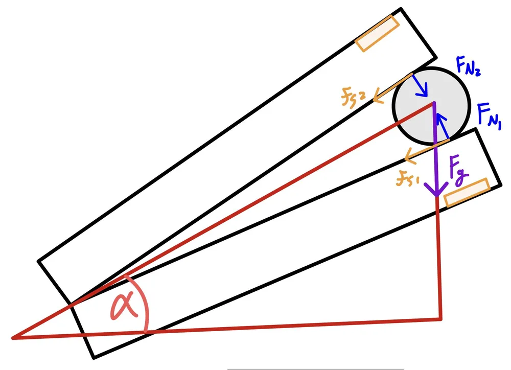
VEX RoboticsTaipei Wego · 2023–25
Two robots, from 23rd to 4th in Taiwan
23083Z · High Stakes · 2024–25
Founder and mechanics lead through Dec 2024, remote after I moved to Hong Kong in Aug 2024. Dual-belt intake, custom 11:1 gearing, a four-bar “Lady Brown” arm with rotation sensors, a pneumatic clamp, a floating roller intake and a Peaucellier–Lipkin linkage. We documented 30+ problems: shaft bending fixed with triangular bracing, intake jamming fixed by tuning height, rings slipping back fixed with a rubber-band valve. 220-page engineering notebook.
We ran two scoring mechanisms at early tournaments before the Lady Brown arm won. A claw arm was sturdy but couldn’t hold a second ring steady and couldn’t reach the neutral stake. A fish mech was easy to fix but fell apart whenever opponents pushed in the last 15 seconds, which happened every game. The Lady Brown was the most consistent. Then the tuning: 100 RPM motors on the arm for torque, the intake dropped to 200 RPM so it wouldn’t overheat over a full match, flex wheels at the top of the intake so rings stopped wobbling, and two pneumatic cylinders on one double-acting solenoid so each action is one line of code.
We failed inspection. Our ruler had centimeters on one side and 台吋, Taiwanese inches, on the other. We read 台吋 (3.03 cm) as inches (2.54 cm), and the arm came out 11.76 cm over the limit. We cut it down and added hard limits, so it could only reach the neutral stakes, and kept the autonomous routine as it was. That season the team won a mid-season Design Award and the Inspire Award at the VEX V5 Taiwan Open, finished Top 4 there, and reached the quarter-finals.
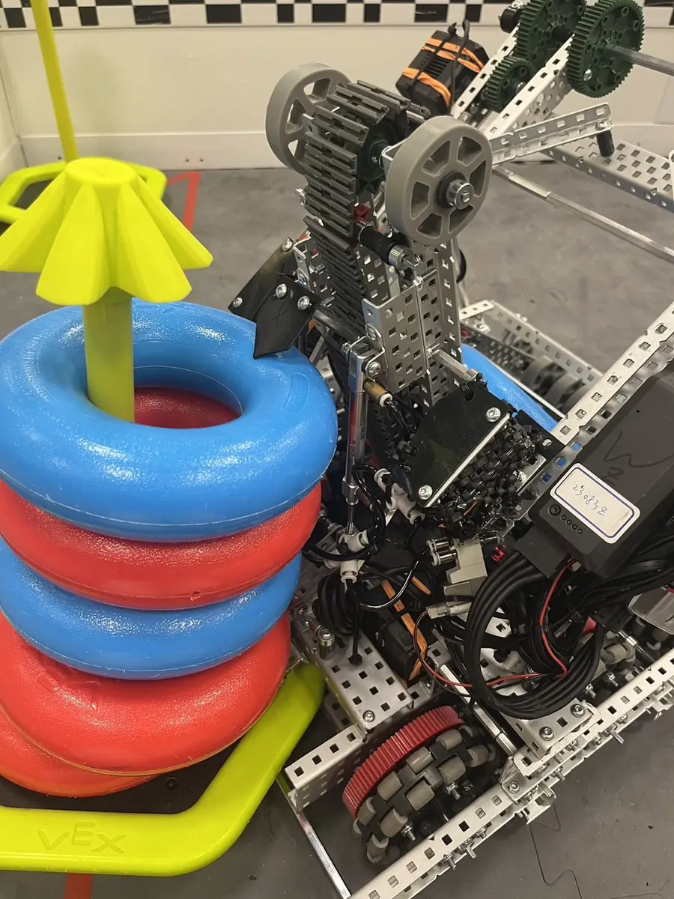
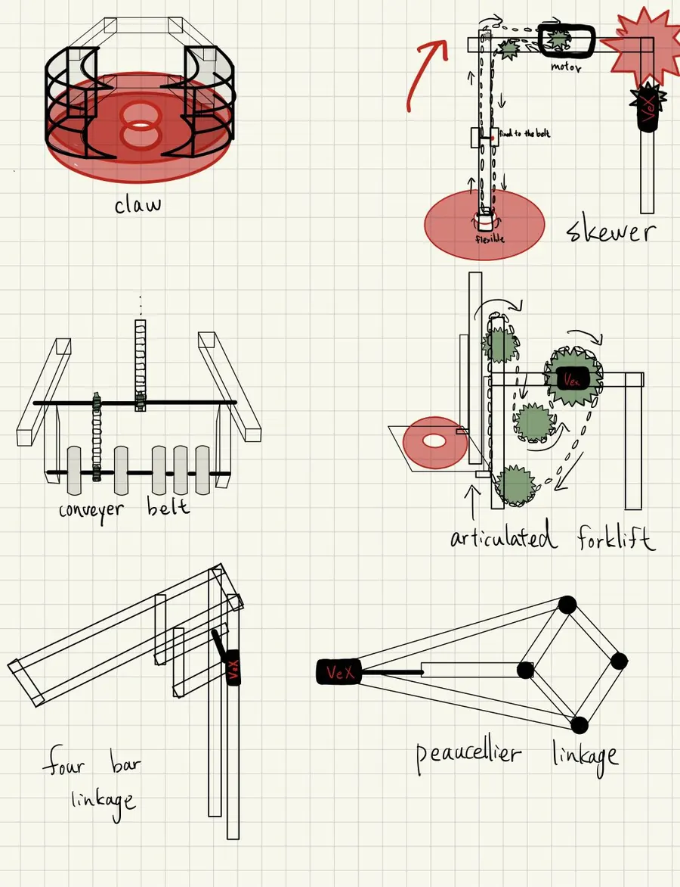
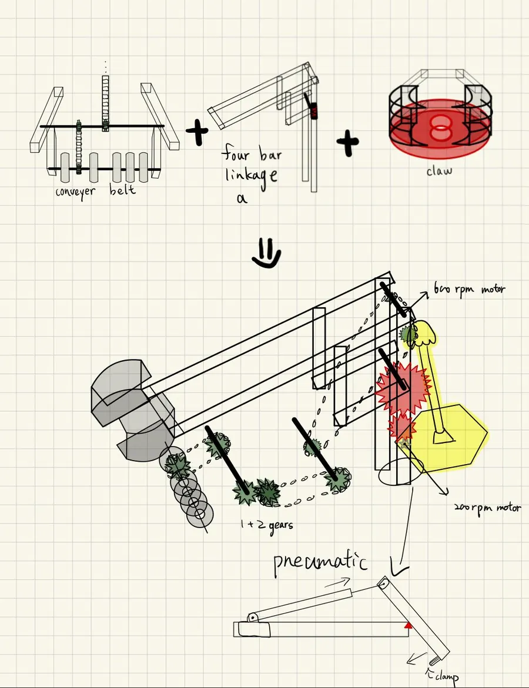
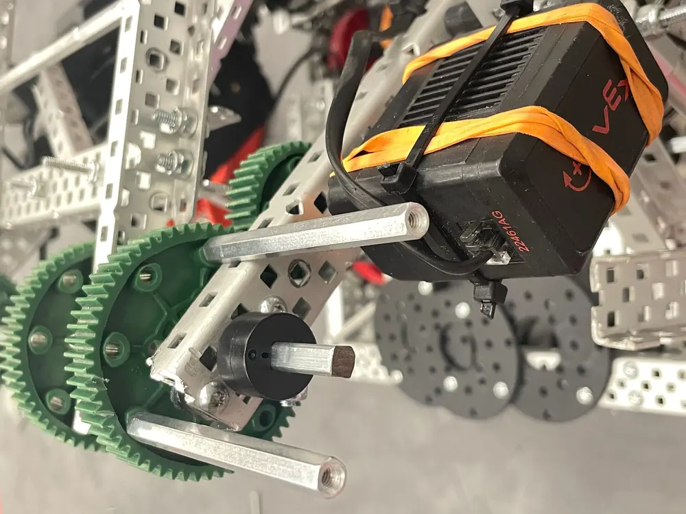
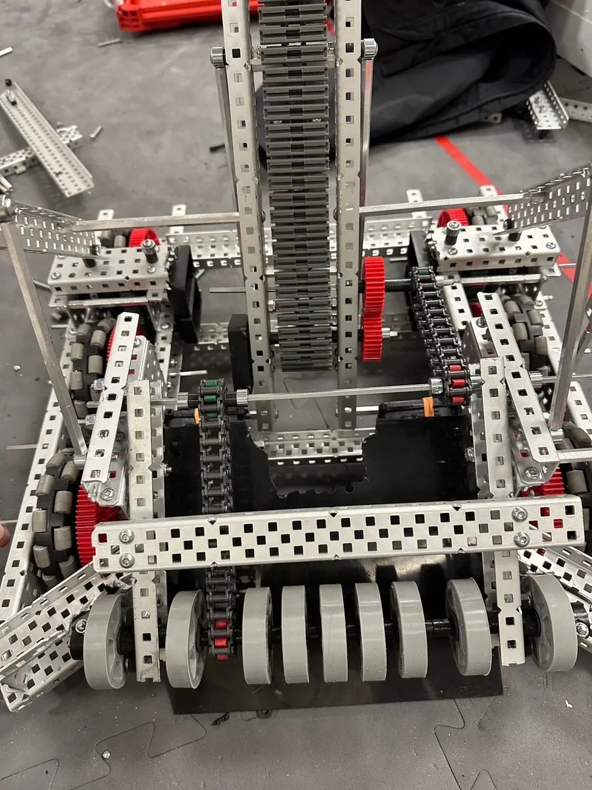
23083Y · Over Under · 2023–24
I founded Wego’s first VEX team in June 2023 and asked local stores and companies to sponsor parts. Mechanics lead, notebook head and autonomous programmer. A six-wheel drivetrain on six motors, a single-flywheel shooter for match loads, pneumatic wings, a rubber-band intake with nets and a six-bar elevation linkage. 4th at our first competition (4–3–0), then the PAS-VEX VRC Signature Event and the VEX V5 Taiwan Open, and we qualified for regionals. 80-page notebook. We settled design arguments with Fusion 360 models.
Testing broke things in useful ways. The base started on six 600 RPM motors and couldn’t get over the mid-bar, so we swapped them all for 200 RPM motors for torque. The first pneumatic network leaked and had its solenoids in the wrong places, and every small leak changed how the robot moved in autonomous. We took the whole network apart and rebuilt it.
We realized we’d misread the starting tiles a day before the competition. So the autonomous routine starts by driving backward to where the code expected to be. It looks weird. It works.
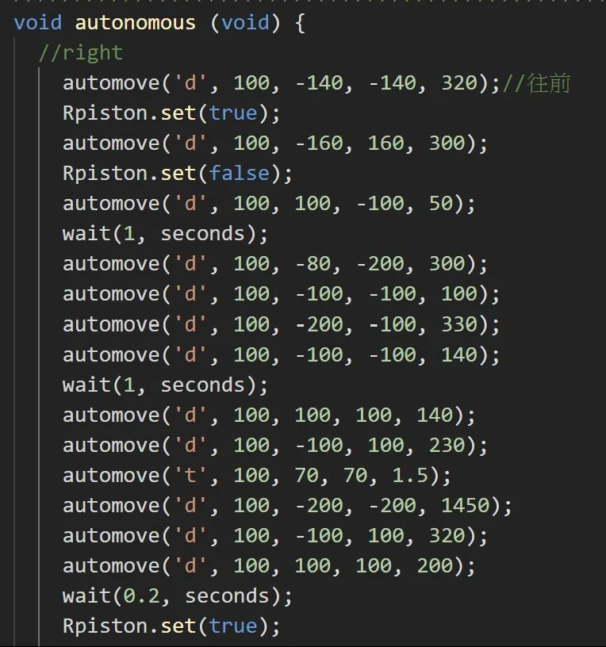
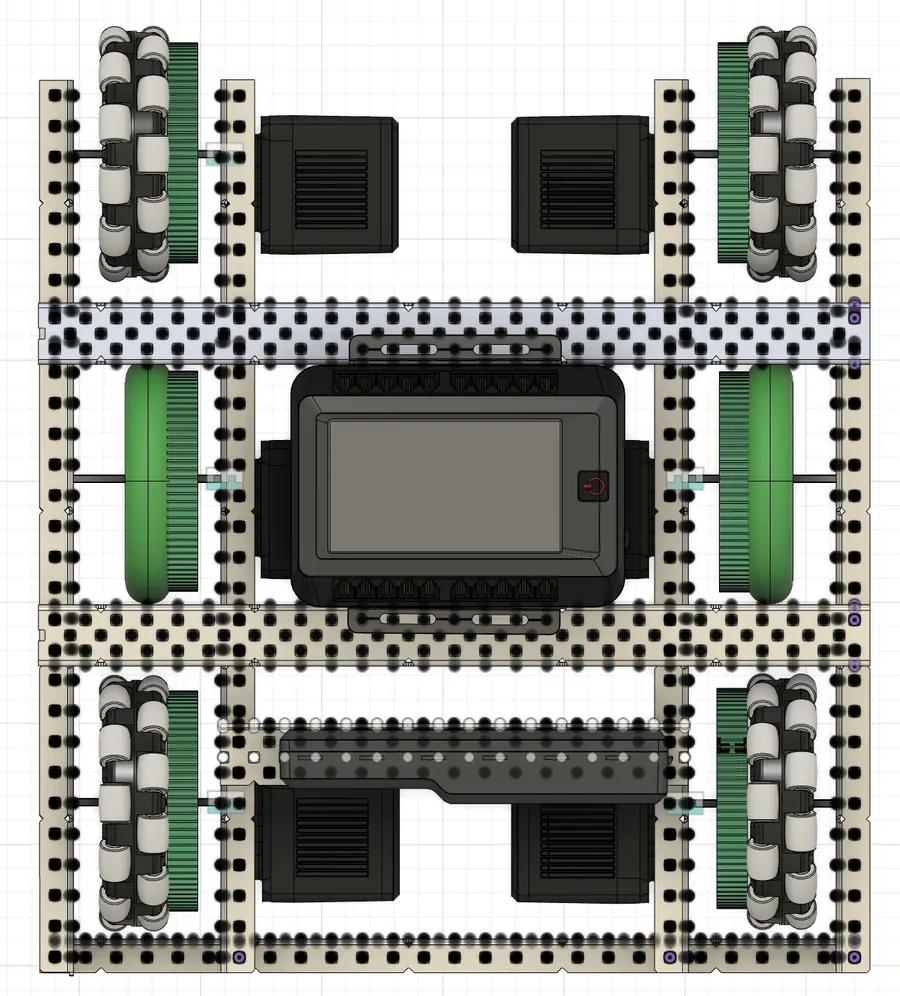
The rest of the benchFilter by kind
More builds
17 entries
Aug 2026
Exocortex
Every new work session started with me re-explaining the same projects. So I built an Obsidian vault in LYT/MOC style, a Claude Code skill that writes one handoff note per session (what changed, what’s pending, one next action that takes two minutes or less), a calendar-connected morning brief, and one experience bank shared across projects.
HiMCM 2024team lead · Honorable Mention, top 25% worldwide
Monte Carlo model of HPC environmental impact
I led a 4-person team and owned the modelling, the Python and the matplotlib. Four stacked models: a CO₂ regression with eleven weighted factors, an e-waste ODE with a recycling decay constant, a cost optimization over electric and diesel units, cooling and an emissions target, and a Monte Carlo sensitivity analysis. A 25-page LaTeX paper in about half the usual prep time.
The Monte Carlo held up: 1,000 runs sampling energy cost, utilization and renewable share to compare mitigation strategies. The other three had problems. I assumed the regression coefficients instead of fitting them, so moving renewable share from 20% to 80% shifted emissions by only about 0.1%. The ODE solution pulled r(t) outside the integral, which is only valid if it’s constant. The objective was effectively linear, so it should have been an LP. The four models didn’t share one variable system. If I rebuilt it, I’d fit the coefficients to real data-center data and thread one cost and emissions definition through all four.
Taipei Robotech 20235th in Taipei City
EV3 golf-ball robot
A line-following EV3 robot that picks up golf balls and delivers them.
Wego 29th Science Exhibition · 2023Physics Senior · 2nd
Hydraulic jump
A hydraulic jump on an angle-adjustable ramp.
LPC Aeromodelling Clubco-leader since Sep 2024
Cardboard RC planes
RC planes from delivery boxes, cut with a knife on a cutting board and hot-glued. I read up on NACA airfoils and camber lines, bought the electronics on TaoBao, programmed my own remote and gave the club a talk on airfoils. Weekly sessions, iterative test flights. The Grumman X-29 started it.
In progress
Astrophotography mount
A 3D-printable equatorial mount and telescope designed in Fusion 360, based on the OpenAstroTech community. Printing will be outsourced.
Science communication
Quantum eraser video
About 20 hours explaining the quantum eraser experiment with the Quantum Flytrap simulator. I read several papers first to pick the right simulation. I also make science and math videos with Blender animations and code demos.
Aug 2026
Xteink X4 custom firmware
Backed up the stock 16 MB flash over browser serial, then flashed CrossPoint v1.5.0 on the 480×800 model.
LPC · since Sep 2024founder and mentor
LPC Robotics Club
The school’s first robotics club. I teach Python, Arduino and electronics. We build robots from recycled materials, and we built an automatic watering system with the gardening club.
LPC · since Sep 2026leader
LPC Astronomy Club
Weekly sessions on observational astronomy: finding your way around the night sky and using a telescope.
Oct 2024 to Mar 2025student leader
Project Week: Taiwan
I proposed, budgeted and organized a fully student-led Project Week trip to Taiwan: routes, food, transport and partner schools. I led the group in Taipei and eastern Taiwan and adapted the plan as we went. With a Paiwanese tribal elementary school we co-ran an Arduino robotics lesson and a cultural exchange, and I translated between languages.
CHAT (The Mills) · 2024–25
Spun Dragon
Our dragon dance team worked with artist Yuki Tanguchi to co-create a dragon from recycled cloth and metal bars, and learned the former textile factory’s recycled-cloth process. We used Blender animations to guide members’ movements. Dragon dance is on the About page.
Fall 2023 to Mar 2024
Conrad Innovation Challenge: Piezoneers
We proposed piezoelectric floor tiles in metro stations to power nearby streetlights, went through the Activation, Lean Canvas and Innovation stages, and built a piezoelectric board model, a website, videos and a pitch. We weren’t selected as finalists. The judges liked the structure and said it wasn’t innovative enough, since tiles like these already exist abroad. I should have researched deeper before claiming novelty.
Jun 2023 to Sep 2024teaching volunteer
Anyone Can Teach
Science and robotics workshops with recycled materials at rural elementary schools in Taiwan, up to 9 hours a day for two weeks each school break.
Jan 2023 to Sep 2024founder and mentor
Wego Robotics Club
I coached younger students building EV3 robots for competitions like Taipei Robotech.
Beitou, Taipei
Raptor conservation
I formed a community of teachers and students and worked with the Raptor Research Group of Taiwan on urban hazards: car strikes, window collisions and pesticide-contaminated prey. We made a news-style video and presented it to Taipei officials, helped with a Crested Serpent Eagle’s leg recovery and its release at school, and ran monthly cleanups on Yangmingshan.
IB Mathematicsposted after final submission
Extended Essay and Internal Assessment
EE: “Optimal Mass Distribution in Multi-Stage Rockets.” Rocket staging as a constrained optimization problem.
IA: “Quaternions and Three-Dimensional Rotation.” Why a 3D rotation has three degrees of freedom but is better stored as four numbers, starting from gimbal lock.
Both are IB assessed work I haven’t submitted yet. Posting them now could get my final copies flagged by plagiarism checks against this page, so they go up after final submission.